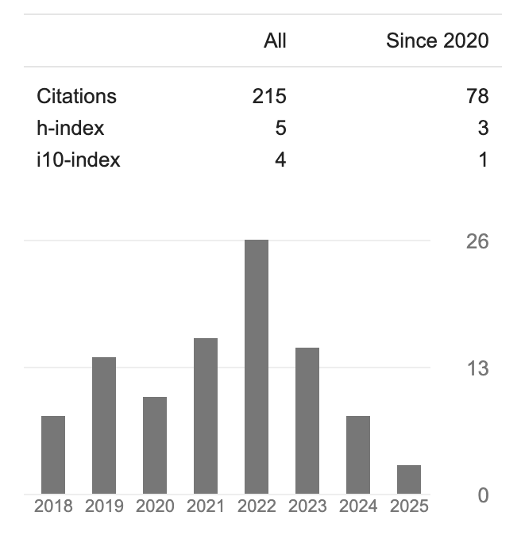

Professional Summary
I'm a seasoned AI and data science leader with 20+ years of experience across manufacturing, engineering, supply chain, automotive, telecom, and the public sector.
I've built and led high-impact teams, scaled AI programs, and delivered enterprise value through data-driven innovation at companies like Bosch, GM, Careem, ADQ, and ZainTECH.
Career Highlights
- ZainTECH: Principal Data Scientist – AI & Data Strategy, Churn modeling, Customer Value Modeling, network analytics
- ADQ – Next50: Principal Data Scientist - AI & Data Strategy for Public Sector Transformation, Tech stack for App Analytics, Predictive Maintenance for Utilities
- Careem (Uber): Lead Data Scientist – Driver Behavioral & Value modeling, Driver Incentive Optimization
- Bosch Center for AI: Sr Principal Data Scientist – Diagnostics & Predictive systems for digital quality, Recommendation Systems for Vehicle Repair, Predictive Maintenance & KPI Improvements for Manufacturing using ML/DS
- General Motors: Sr Research Scientist - Customer Voice, Planning-Finance-Pricing Strategy, Engineering & Manufacturing Analytics
Data Products
- Ijaba – An AI-driven platform for industrial IoT analytics and insights, listed on the Azure Marketplace.
- Experience Based Repair – Bosch's intelligent repair recommendation system built using historical and expert repair knowledge.
- Agile Field Quality Monitoring – Cloud-based predictive system for detecting and analyzing field failures across connected devices and vehicles.
Core Expertise
- Deep Expertise in AI, ML & DS Algorithms
- AI & Data Strategy & Program Management
- Digital Transformation Leadership
- Data Science Team Building & Mentoring
- SME AI Enablement & Consulting
Education
- Master’s in Industrial Engineering – Penn State University
- Bachelor’s in Mechanical Engineering – University of Mumbai
Research & Innovation
Throughout my career, I’ve blended deep domain knowledge with AI to solve complex industrial problems. My contributions in academia have been in reputed journals and I have over 200+ citations.”
Citation Trends (as of May 2025)

Source: Google Scholar